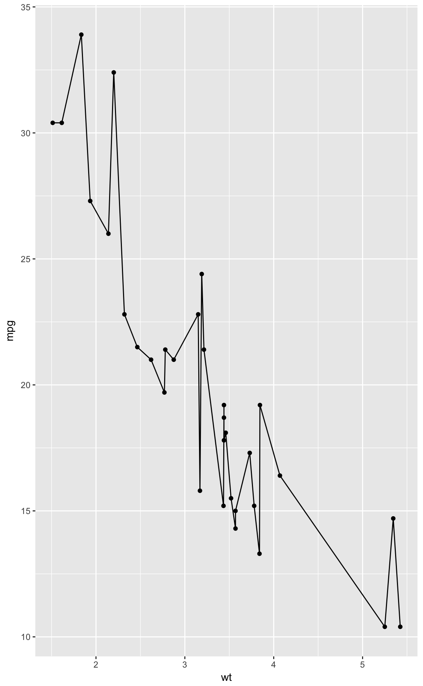
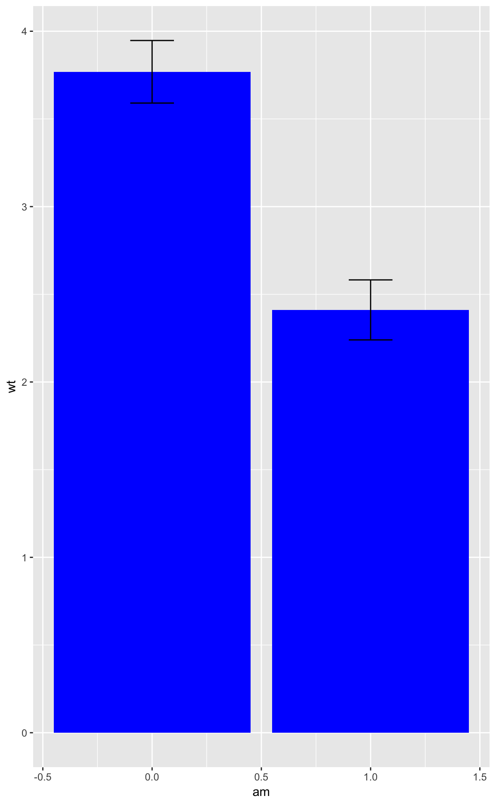

Inspection & Documentation
Doug Kelkhoff
2018-03-30 21:40:15
Although there’s a lot of power in how eagerly ggpack swallows up arguments, it is also a cause of many potential problems. This stems from a multitude of reasons stemming from the more tolerant handling of arguments. The primary concerns are that when passing many arguments through to all the layers of a ggplot construction, warnings for improper arguments need to be occassionally suppressed. Likewise, as arguments are overwritten by the last enterred instance, that argument may be quietly suppressed. This can be unintuitive if not communicated responsibly, so a considerable amount of effort has been spent to make these actions communicated by default and optionally suppressable.
Before jumping in to the mechanisms in place, let’s motivate the issue at hand with a couple examples of situations where behavior allowed by ggpackets may cause confusion for an end user.
Standalone plotting
The most common message displayed during packet construction is to indicate when insufficient information is provided to the ggpackets construction to allow for independent plotting (plotting without prefacing with ggplot() + aes(...) + ...). This is a completely innocuous message, and is only relevent if it’s desirable to use a ggpackets function as a standalone plotting function.
my_ggpack <- function(...)
ggpack(geom_point, ...) + ggpack(geom_line, ...)
my_ggpack()
## ggpacket
## standalone plotting status:
## Not all layers have been passed sufficient data
##
## [[1]]
## Anonymous ggpacket layer
## geom_point (function):
##
## [[2]]
## Anonymous ggpacket layer
## geom_line (function):Adding data, as directed, prompts us with a new message:
my_ggpack(data = mtcars)
## ggpacket
## standalone plotting status:
## geom_point requires the following missing aesthetics: x, y
##
## [[1]]
## Anonymous ggpacket layer
## geom_point (function):
## ... .. data = mtcars
##
## [[2]]
## Anonymous ggpacket layer
## geom_line (function):
## ... .. data = mtcarsFinally, passing all required aesthetics allows for standalone plotting.
my_ggpack(data = mtcars, x = wt, y = mpg)
Potential for Confusion
Arguments not taking affect as expected
When arguments are passed to many layers, it might be unclear why it is only taking effect in a subset of the layers within a plot. In the example below, one may expect both the bars and errorbars to be affected by the blue fill parameter. However, because ggplot2 does not use the fill aesthetic for errorbars, this argument will not take effect.
my_ggpk <- function(...) {
ggpack(geom_bar, fun.data = mean_se, ..., stat = 'summary') +
ggpack(geom_errorbar, fun.data = mean_se, ..., width = 0.2, stat = 'summary')
}
ggplot(mtcars) +
aes(x = am, y = wt) +
my_ggpk(fill = 'blue')
Specified arguments being overwritten
If an argument is quitely overwritten with a function, it can cause confusion as to why their desired parameters are not taking effect. In the following example, the color of the plot is overwridden within the function call to be set to red.
my_ggpk <- function(...) ggpack(geom_point, ..., colour = 'red')
ggplot(mtcars) +
aes(x = wt, y = mpg) +
my_ggpk(color = 'blue')
Documenting Possible Parameters
With the versatility of parameters that can be captured with the ellipses arguments makes documentation of encapsulating functions quite difficult. To help ease this process, the function document_ggpk is provided to parse a function for calls to ggpk and automatically produce roxygen documentation to describe the passing through of arguments.
document_ggpk(my_ggpk)## #' @param ... Arguments prefixed with the following \code{id}s will be parsed
## #' and passed to the following calls:
## #' \itemize{
## #' \item \strong{NULL} id: Passed to call to
## #' \code{\link[ggplot2]{geom_point}}. \code{color} fixed.
## #' }This function can also be used within a roxygen @eval statement, specifying prefix = '' (to omit the #' before each line) and optionally can include header = FALSE if you’d prefer to write your own preamble to the itemized parameter documentation.
#' For example, within roxygen text you could include:
#' @param ... Arguments are passed like this:
#' @eval document_ggpk(my_ggpk, header = FALSE, prefix = '')
document_ggpk(my_ggpk, header = FALSE, prefix = ' ')## \itemize{
## \item \strong{NULL} id: Passed to call to
## \code{\link[ggplot2]{geom_point}}. \code{color} fixed.
## }This function works well for the most streamlined use cases, but there are many ways where the behavior can be more sophisticated. There are a few features included to try to address some of these more sophisticated utilizations, though in most cases they are unnecessary.
In situations where the dots parameter ambiguously overwrites arguments, you will be prompted on whether thos arguments should be considered fixed. Similarly, if variables are being used to indicate the id of a ggpack construction, you will be prompted for what text to use to document that id.